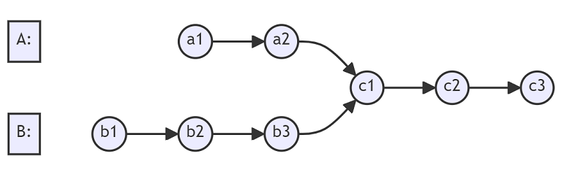
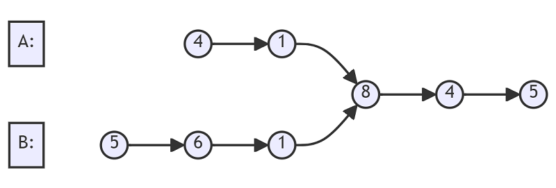
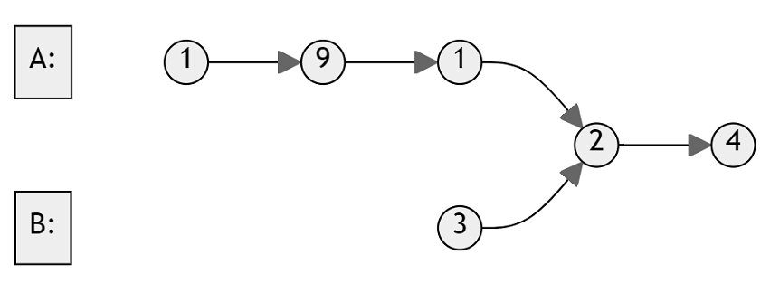
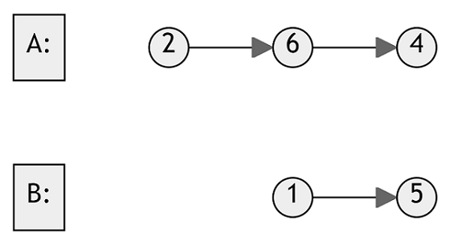

Intersection of Two Linked Lists
Problem statement
You are provided with the starting nodes of two singly linked lists, headA and headB. Your task is to find the node where these two lists intersect. If there is no point of intersection, return null.
For example, the following two linked lists begin to intersect at node c1:

Note that the linked lists do not have any cycles, and you must ensure that the original structure of the linked lists remains unchanged after solving this problem.
Example 1

Input: listA = [4,1,8,4,5], listB = [5,6,1,8,4,5].
Output: Intersected at '8'
Example 2

Input: listA = [1,9,1,2,4], listB = [3,2,4]
Output: Intersected at '2'
Example 3

Input: listA = [2,6,4], listB = [1,5]
Output: No intersection.
Constraints
- The number of nodes of
listAis in them. - The number of nodes of
listBis in then. 1 <= m, n <= 3 * 10^4.1 <= Node.val <= 10^5.
Follow up
- Could you write a solution that runs in
O(m + n)time and use onlyO(1)memory?
Solution 1: Store the nodes
You can store all nodes of listA then iterate listB to determine which node is the intersection. If none is found, the two lists have no intersection.
Example 1
- Store all nodes of
listA = [4,1,8,4,5]in a map. - Iterate
listBand found node'8'was stored. - Return
'8'.
Code
#include <iostream>
#include <unordered_map>
using namespace std;
struct ListNode {
int val;
ListNode *next;
ListNode(int x) : val(x), next(NULL) {}
};
ListNode *getIntersectionNode(ListNode *headA, ListNode *headB) {
unordered_map<ListNode*, bool> m;
ListNode *node = headA;
while (node != nullptr) {
m[node] = true;
node = node->next;
}
node = headB;
while (node != nullptr) {
if (m.find(node) != m.end()) {
return node;
}
node = node->next;
}
return nullptr;
}
int main() {
{ // Example 1
ListNode five(5);
ListNode four(4);
four.next = &five;
ListNode eight(8);
eight.next = &four;
ListNode one1(1);
one1.next = &eight;
ListNode four1(4);
four1.next = &one1;
ListNode one2(1);
one2.next = &eight;
ListNode six2(6);
six2.next = &one2;
ListNode five2(5);
five2.next = &six2;
cout << (getIntersectionNode(&four1, &five2) == &eight) << endl;
}
{ // Example 2
ListNode four(4);
ListNode two(2);
two.next = &four;
ListNode one12(1);
one12.next = &two;
ListNode nine1(9);
nine1.next = &one12;
ListNode one11(1);
one11.next = &nine1;
ListNode three2(3);
three2.next = &two;
cout << (getIntersectionNode(&one11, &three2) == &two) << endl;
}
{ // Example 3
ListNode four(4);
ListNode six(6);
six.next = &four;
ListNode two(2);
two.next = &six;
ListNode five(5);
ListNode one(1);
one.next = &five;
cout << (getIntersectionNode(&two, &one) == nullptr) << endl;
}
}
Output:
1
1
1
This code uses an unordered map to store the nodes of headA while traversing it. Then, it traverses headB and checks if each node in headB exists in the map of nodes from headA. If a common node is found, it returns that node as the intersection point; otherwise, it returns nullptr to indicate no intersection.
Complexity
- Runtime:
O(m + n), wherem,nare the number of nodes oflistAandlistB. - Extra space:
O(m).
Solution 2: Reiterating the two lists at the same time
If the two lists do not share the same tail, they have no intersection. Otherwise, they must intersect at some node.
After iterating to find the tail node, you know the length of the two lists. That information gives you a hint of how to reiterate to find the intersection node.
Example 1
- After iterating
listA = [4,1,8,4,5], you find the tail node is'5'andlistA.length = 5. - After iterating
listB = [5,6,1,8,4,5], you find the tail node is the last'5'andlistB.length = 6. - The two lists share the same tail. They must intersect at some node.
- To find that intersection node, you have to reiterate the two lists.
- Since
listB.length = 6 > 5 = listA.length, you can start iteratinglistBfirst until the number of its remaining nodes is the same aslistA. In this case, it is the node'6'oflistB. - Now you can iterate them at the same time to find which node is shared.
- Found and return the intersection node
'8'.
Code
#include <iostream>
#include <unordered_map>
using namespace std;
struct ListNode {
int val;
ListNode *next;
ListNode(int x) : val(x), next(NULL) {}
};
ListNode *getIntersectionNode(ListNode *headA, ListNode *headB)
{
int lengthA = 0;
ListNode *nodeA = headA;
while (nodeA->next != nullptr) {
lengthA++;
nodeA = nodeA->next;
}
int lengthB = 0;
ListNode *nodeB = headB;
while (nodeB->next != nullptr) {
lengthB++;
nodeB = nodeB->next;
}
// not the same tail -> no intersection
if (nodeA != nodeB) {
return nullptr;
}
nodeA = headA;
nodeB = headB;
// find the nodeA in listA and nodeB in listB
// that make two lists have the same length
while (lengthA > lengthB) {
nodeA = nodeA->next;
lengthA--;
}
while (lengthB > lengthA) {
nodeB = nodeB->next;
lengthB--;
}
// find the intersection
while (nodeA != nodeB) {
nodeA = nodeA->next;
nodeB = nodeB->next;
}
return nodeA;
}
int main() {
{ // Example 1
ListNode five(5);
ListNode four(4);
four.next = &five;
ListNode eight(8);
eight.next = &four;
ListNode one1(1);
one1.next = &eight;
ListNode four1(4);
four1.next = &one1;
ListNode one2(1);
one2.next = &eight;
ListNode six2(6);
six2.next = &one2;
ListNode five2(5);
five2.next = &six2;
cout << (getIntersectionNode(&four1, &five2) == &eight) << endl;
}
{ // Example 2
ListNode four(4);
ListNode two(2);
two.next = &four;
ListNode one12(1);
one12.next = &two;
ListNode nine1(9);
nine1.next = &one12;
ListNode one11(1);
one11.next = &nine1;
ListNode three2(3);
three2.next = &two;
cout << (getIntersectionNode(&one11, &three2) == &two) << endl;
}
{ // Example 3
ListNode four(4);
ListNode six(6);
six.next = &four;
ListNode two(2);
two.next = &six;
ListNode five(5);
ListNode one(1);
one.next = &five;
cout << (getIntersectionNode(&two, &one) == nullptr) << endl;
}
}
Output:
1
1
1
This improved solution finds the intersection of two linked lists by first determining their lengths and adjusting the pointers so that they start from the same relative position to the intersection point. Then, it iterates through both linked lists until it finds the common intersection node.
Complexity
- Runtime:
O(m + n), wherem,nare the number of nodes oflistAandlistB. - Extra space:
O(1).
Implementation tip
- The technique used in Solution 2 is known as the Two-pointer technique since you use two pointers to iterate the list at the same time.